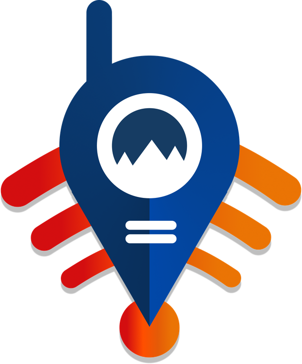

POINTRESCUESignal Lost. Lives Found.
Pelacak taktis wearable untuk wilayah tanpa sinyal. A wearable tactical tracker for places with no signal.
PKM-KC 2026/Universitas Brawijaya/LoRa 433 MHz
PKM-KC 2026 · Fakultas Ilmu Komputer
Universitas Brawijaya
PKM-KC 2026 · Faculty of Computer Science
Universitas Brawijaya